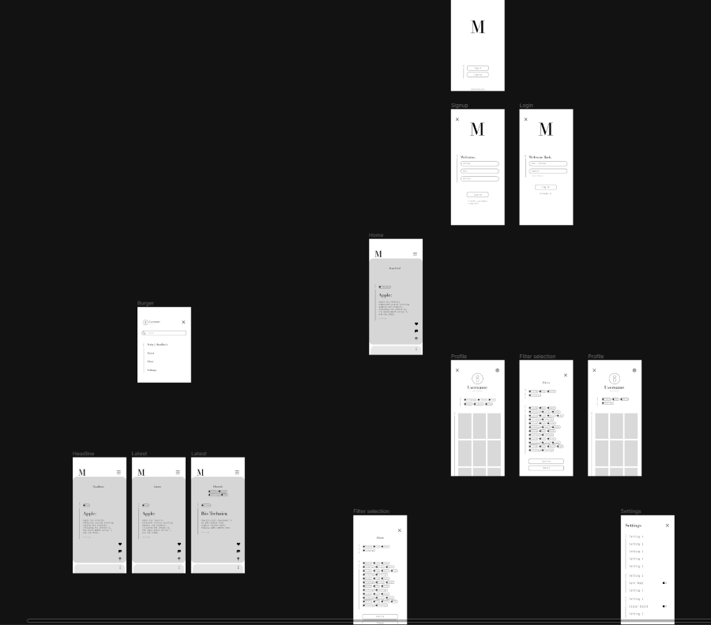
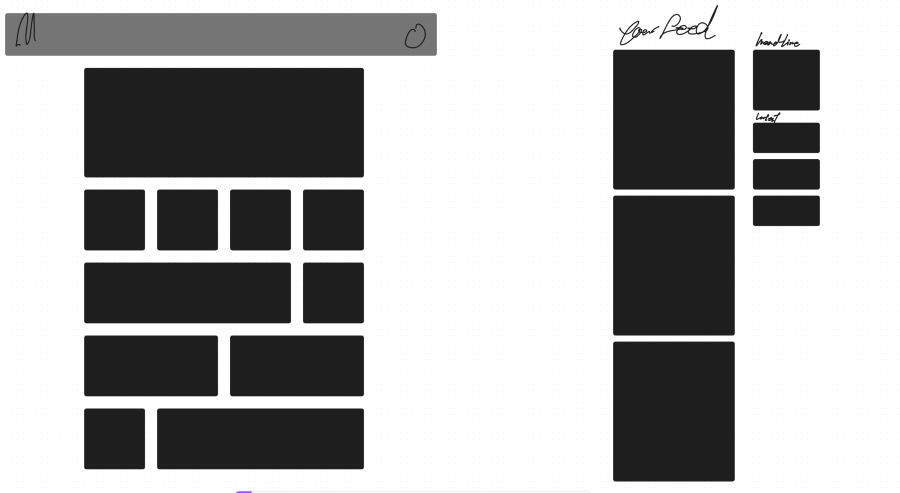
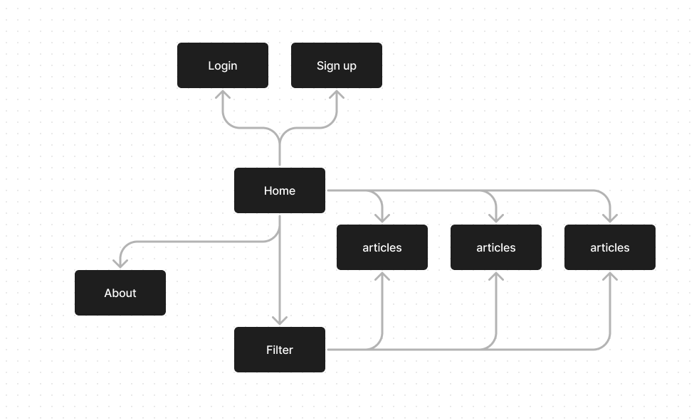
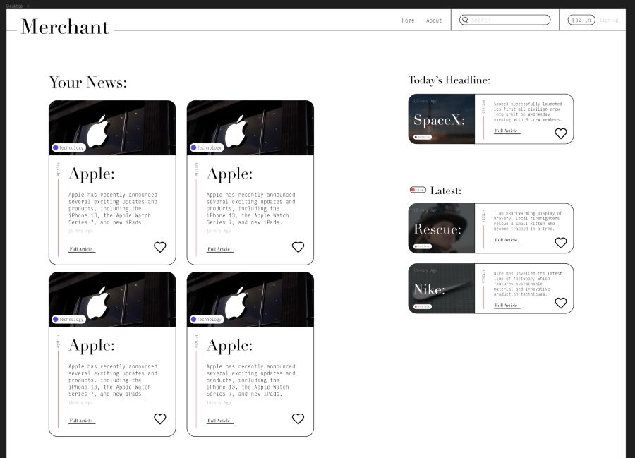
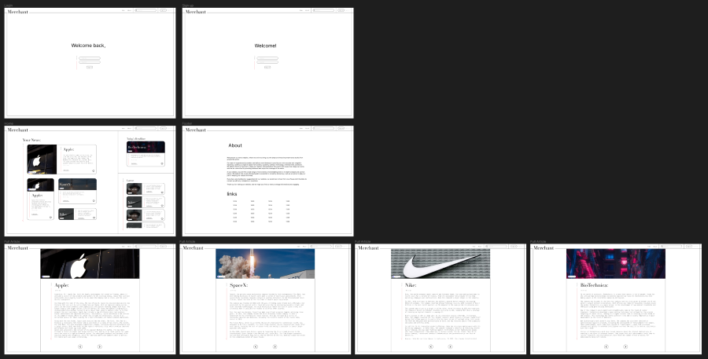
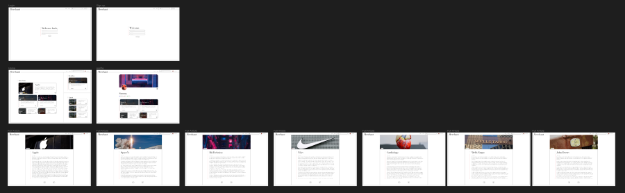

+8-=-=-=-=-=-8+ | ,.-'"'-., | |/ \| |\:. .:/| | \:::::::/ | | \:::::/ | | \:::/ | | ):( | | / . \ | | / . \ | | / . \ | |/ .:. \| |\.:::::::./| | '--___--' | +8-=-=-=-=-=-8+
Prototypes
After making the paper prototype and getting some feed back from users. I started to make turn those suggested changes from paper to digital prototypes.
But after playing around with the digital lofi prototype the concept of the solution slowly started to change and evolve. It started off as a tik tok like format to make not liking how things were placed and then it slowly started to change in to a card like format. With this new format but still the same content. I mapped out what i wanted the new website to look like. It could have been from a simple website layout of having cards placed in a generic manner. Or i could also have gone, still a similer tik toc style of having the main content in a scrollable format like how the tik toks website it.
In the end ive decided to do a mash between these two. There would be a main scrollable section in a grid format and on the side there would be the latest and head lines section. The main section would be dedicated to the content for the viewer or what the website thinks the viewer would like.
I laid out the content too see if i liked the layout of the new design with the new cards and it turned out to look like a design website.
When i did that i realized that the original idea didnt have a good identity for it because it was so based off of tik tok.
When moving on to a different layout its also important to redo a new site map to fit the users needs. Keeping things minimal and simple allows for the website to focus in the things that matter like the cards and the articles themselves without any fluff.
I moved onto creating a mid-fi prototype and fully creating a news dashboard. Ive created 2 version of the but essentially its just the same thing with different pages. I did this to see how things would look.
 After creating both i just scrapped the first one in favour of the on with the most articles and profile. this is mainly because the overall design of the website since i wasnt planning on having a footer at the bottom of the page, but instead having the footer in the about page. Yes having the the about page for a ready to test prototype would be me crossing my eyes and dotting my Ts but i thought not having it would be a better representation of how the website would be for the target audience because there wouldnt be any need to have an about us because they might just not be interested in it at all.
User testing
user 1
- Like the back and forward button on the articles Ease of access to the next article
- There should be a notification that tells you that you liked a article because. Slow Wi-Fi mainly for users needs
- Didn’t know that the content is scroll able should add one to indicate the there are more content
- They expected that if the user was not logged in that the layout of the website should change because there is no user data generated to give a “Your News section” different view for non registered users
user 2
- unexpected change in article
- scrollbar needed
- change like icon to save/bookmark icon
- click tag to show same type article
- article popup could be better
user 3
- Didn’t know that the “Your News” section can be scrolled
- felt that a category selector would be a nice to have for ease of finding the topic you like
- an article pop up would feel much more easy to use then a article page, or just a quick article peak
- no scroll indication
- next and back button is useful on articles
Testing synthesis:
- Scroll indication is needed This has been the one feedback that has been echoed out in all 3 of the user testing session making it the main issue that I need to fix.
- Article selector The article topic selector has also shown un in 2 of the 3 feedback sections. This was unexpected from the users end as they thought in the prototype that there would be that function but there wasn’t.
- Other from these 2 main things that have popped up in 2 or more user testing session the other feedback is also really useful for me to take in as they would represent some of the QoL things that a website might have the i didnt know about and should implement